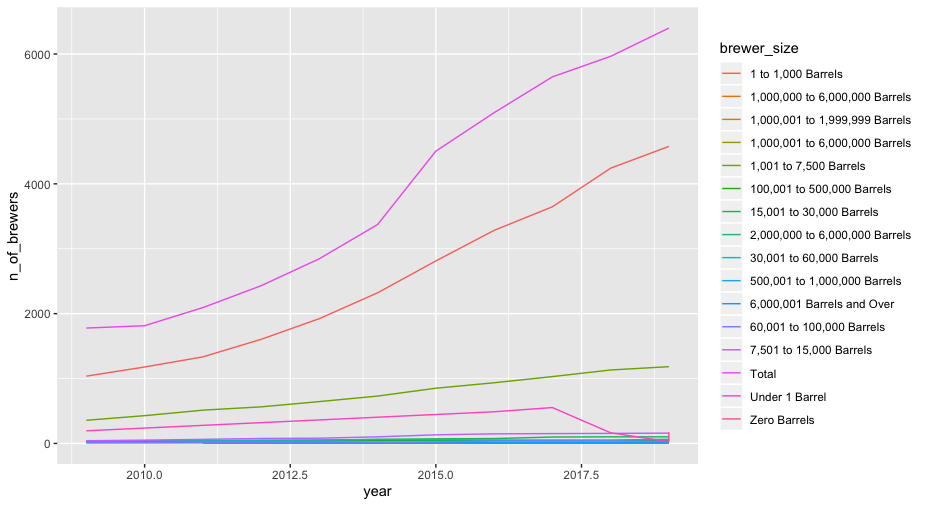
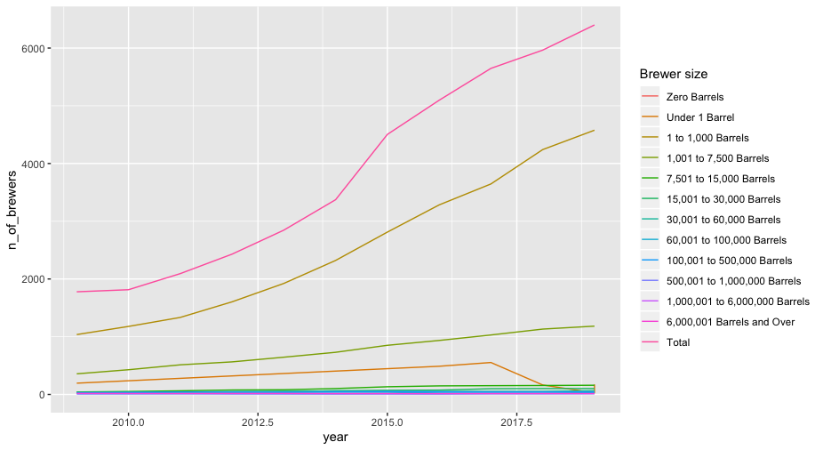

How to change the labels for a ggplot legend
-- Published on 21 May 2020 --
The scale_colour_discrete() function can be used alongside ggplot to provide new names in the legend.
To demonstrate, load a TidyTuesday dataset from 3/31/20:
library(tidyverse)
brewer_size <- readr::read_csv(https://raw.githubusercontent.com/rfordatascience/tidytuesday/master/data/2020/2020-03-31/brewer_size.csv
)
Here is the initial plot of brewer numbers by brewer size over time:
brewer_size %>%
group_by(year) %>%
ggplot() +
geom_line(aes(y = n_of_brewers, x = year, col=brewer_size))

I wanted to ensure that the brewer_size information would be listed in plots from smallest production (zero barrels of beer) to largest production (total production). To do this I created a new column that would default to the desired order when plotted and filled it using the case_when() function.
updated_brewer_size <- brewer_size %>% mutate(brewer_size_ordered = case_when(brewer_size == Zero Barrels
~ A
,
brewer_size == Under 1 Barrel
~ B
,
brewer_size == 1 to 1,000 Barrels
~ C
,
brewer_size == 1,001 to 7,500 Barrels
~ D
,
brewer_size == 7,501 to 15,000 Barrels
~ E
,
brewer_size == "5,001 to 30,000 Barrels
~ F
,
brewer_size == 30,001 to 60,000 Barrels
~ G
,
brewer_size == 60,001 to 100,000 Barrels
~ H
,
brewer_size == 100,001 to 500,000 Barrels
~ I
,
brewer_size == 500,001 to 1,000,000 Barrels
~ J
,
brewer_size == 1,000,001 to 6,000,000 Barrels
~ K
,
brewer_size == 6,000,001 Barrels and Over
~ L
,
brewer_size == 1,000,000 to 6,000,000 Barrels
~ M
,
brewer_size == 2,000,000 to 6,000,000 Barrels
~ N
,
brewer_size == 1,00,001 to 1,999,999 Barrels
~ O
,
brewer_size == Total
~ P
))
Note: the information provided to the case_when() function must be 2-sided where on the left you have a statement that could be passed to which() and on the right of the ~ you have the value to replace it with in the new column.
This solution correctly ordered my legend, but left me with uninformative labels. To return the labels to their original names I used the scale_colour_discrete() function.
updated_brewer_size %>%
filter(brewer_size_ordered != M
,
brewer_size_ordered != N
,
brewer_size_ordered != O
,
brewer_size_ordered != NA
) %>%
group_by(year) %>%
ggplot() +
geom_line(aes(y = n_of_brewers, x = year, col=brewer_size_ordered)) +
scale_colour_discrete(name = Brewer size
, labels = c(Zero Barrels
, Under 1 Barrel
, 1 to 1,000 Barrels
, 1,001 to 7,500 Barrels
, 7,501 to 15,000 Barrels
, 15,001 to 30,000 Barrels
, 30,001 to 60,000 Barrels
, 60,001 to 100,000 Barrels
, 100,001 to 500,000 Barrels
, 500,001 to 1,000,000 Barrels
, 1,000,001 to 6,000,000 Barrels
, 6,000,001 Barrels and Over
, Total
))

Note: scale_colour_discrete() mapped these new legend labels to the existing col argument that specifies line color. But for plots where you use fill to change the plot color (e.g. boxplots, histograms...) use scale_fill_discrete() instead.